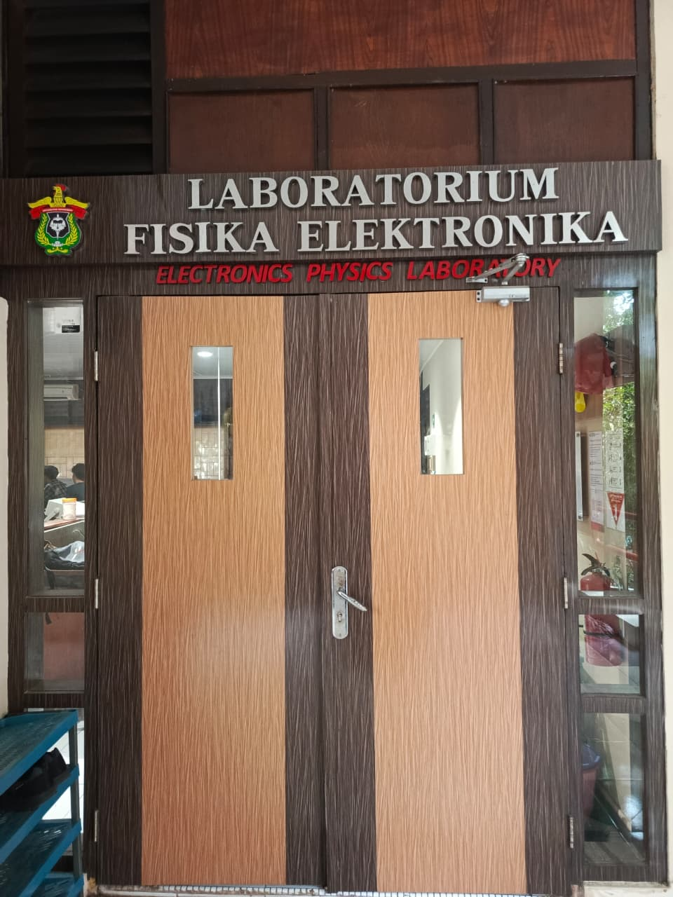

👥 Related Staff

Prof. Dr. Bualkar Abdullah, M.Eng.Sc.
Guru Besar / IV.d

Prof. Dr. Arifin, M.T.
Guru Besar / IV.d

Dr. Ir. Bidayatullah Arminah, M.T.
Lektor Kepala / IV.a
🎓 Active Students
Miswanja Batu Padang
NIM: H021231004
Ruth Lebang
NIM: H021231005
Dandi Hartono
NIM: H021231007
Sheira Abideva. H
NIM: H021231022
Ansar Mubaraq
NIM: H021231043
Febrinesya Alfha Tandi Lion
NIM: H021231063
Juliyati Puspita Sari
NIM: H021231052
Nur Alik Katu
NIM: H021231041
Nur Amalia
NIM: H021231067
Sri Wahyuni
NIM: H021231053
Taskiyatunnaps
NIM: H021231055
Ulva Asriani Nur
NIM: H021231037
Yemima Melanie Surya
NIM: H021231042
Muh. Asnawi
NIM: H021231027
Galeri Dokumentasi
Lihat dokumentasi lengkap kegiatan praktikum dan aktivitas laboratorium.
Buka Galeri →Lab Description
Kelompok keahlian Fisika Elektronika dan Instrumentasi PSF Universitas Hasanuddin memiliki beberapa mata kuliah pilihan yang ditawarkan, antara lain: Mikroprosesor, Mikrokontroler dan Antarmuka, Kendali Otomatis, Elektronika Lanjut, dan Instrumentasi Medis. Mata kuliah instrumentasi medis merupakan mata kuliah wajib bagi mahasiswa yang mengambil peminatan Fisika Medis. Kelompok keahlian Sistem Elektronika dan Instrumentasi memiliki beberapa topik penelitian, termasuk: antena, sensor, dan alat ukur berbasis elektronika.
